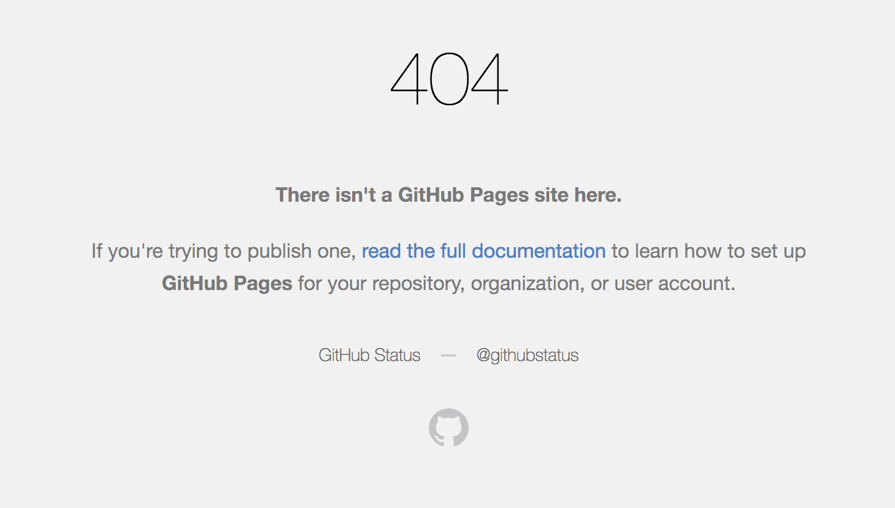

Middleman から Hexo に引っ越した
ブログフレームワークを Hexo に
Middleman から Hexo に移行した．
はてなダイアリー > WordPress (さくらレンタルサーバ) > Middleman (GitHub Pages) と渡ってきて Hexo は第４世代となる．
個人で作っているものは，技術的な検証をしたり遊んだりする場所にしたいと思っている．
HUGO とかも選択肢にあったが，最近は Node 環境で開発していることが多く，色々カスタマイズしたい性分の自分にとっては Node の方がよかった．
ドメインを blog.tanaka.world に
http://yutarotanaka.com/blog で運用していたブログを廃止した．
ドメインはなにかに使うかもしれないので，一応残しておく．
現在は全コンテンツを移行し，全部 404ページにしている．
GitHub Pages はルートに 404.html を置くことで，GitHub デフォルトの 404 ページをカスタマイズできるようになっている．
➡️ Creating a custom 404 page for your GitHub Pages site

ちなみに，杉並区議員に同姓同名の議員さんがいるらしく時々間違われていた（笑）．昔は http://tanakayutaro.com/だった気がするので，あちらも引っ越しされたのか．
GitHub Pages でサブドメインを設定
ホスティングは引き続き GitHub Pages にしている．昔はできなかったが，現在は SSL 対応も可能になっている．tanaka.world の方は， Vue.js + Nuxt.js + Firebase (Hosting/CloudFunctions) でホスティングしていて，ブログはそこに混ぜたくなかった．別プロジェクトで運用するべくサブドメインにした．
GH Pages はサブドメインを設定することもできる．ルートに CNAME ファイルを設定し，DNS で YOUR-GITHUB-USERNAME.github.io という A レコードを設定するだけでOK．
➡️ Setting up a custom subdomain
2018 年下期に向けて
2016 年下期 〜 2018 年上期にかけて，ブログ更新が滞っていた．
技術的なメモは時々 Qiita にアップしていたが，ブログは下書きのまま放置されている状態になりがちだった．
2018 年下期は，アウトプットを更新を増やしていきたい．